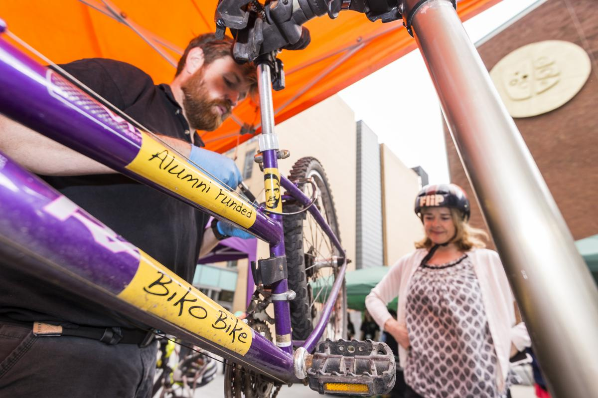
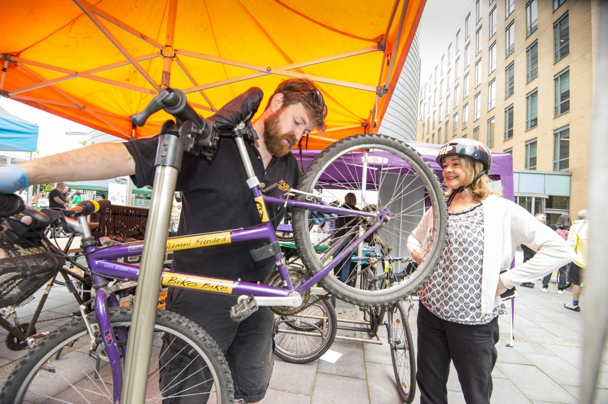
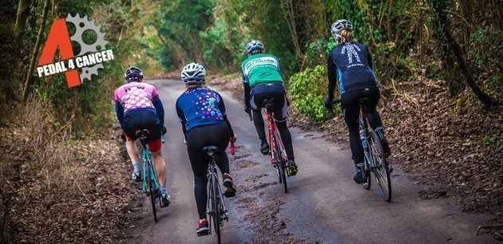

THE MOUNTAIN SPOKE - Everything Bicycles!THE MOUNTAIN SPOKE - Everything Bicycles!
THE MOUNTAIN SPOKE - Everything Bicycles!THE MOUNTAIN SPOKE - Everything Bicycles!Over the years, yours truly "The Mountain Bike" has supported cyclists. With this in mind, we supported last year's Corridor Manchester Cycling Event which was hosted by The University of Manchester. The event brought together 250 cyclists who prepared themselves to participate in the games which was organised by Corridor Machester Travel. Our service personnels were also around to service the bicylces which were going to be used by the cyclists.
 Mountain Spoke also supports an annual program is is dubbed "Pedal4Cancer. This initiative has been put together to create cancer awarness and also raise funds to support people living with cancer. This isn't a race but a fun filled event for all famillies and is going to be held at Lee Valley VeloPark, Queen Elizabeth Olympic Park, Abercrombie Rd, London, Greater London, E20 3AB, UK. Cyclists are expected to ride 60 miles i.e from the starting point to the finish line. There will be rest stops at each point.
